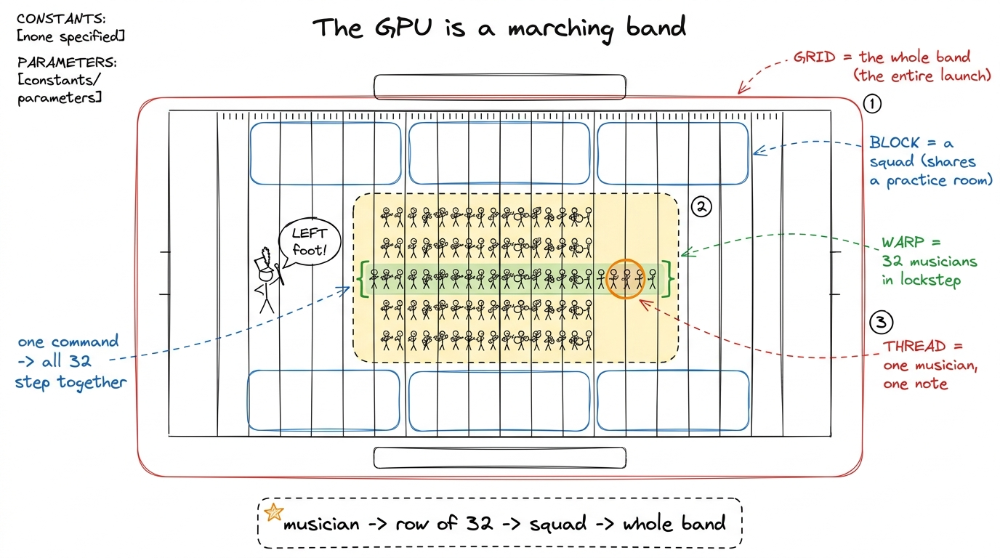
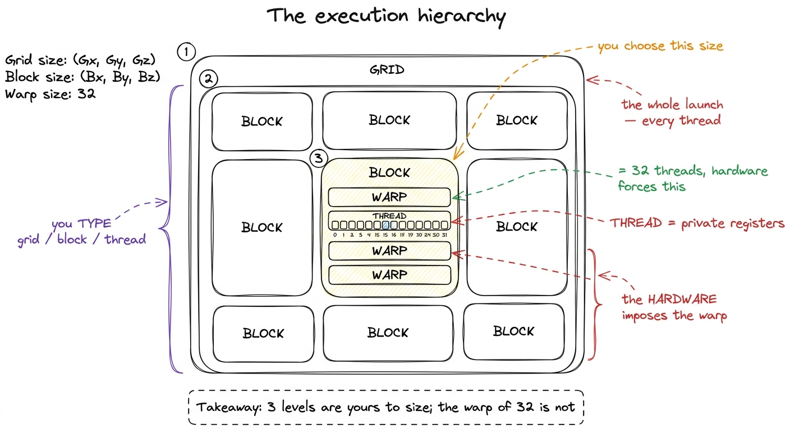
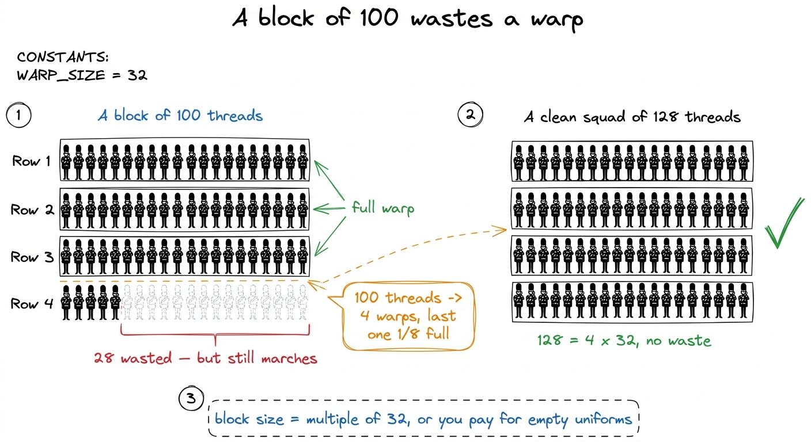
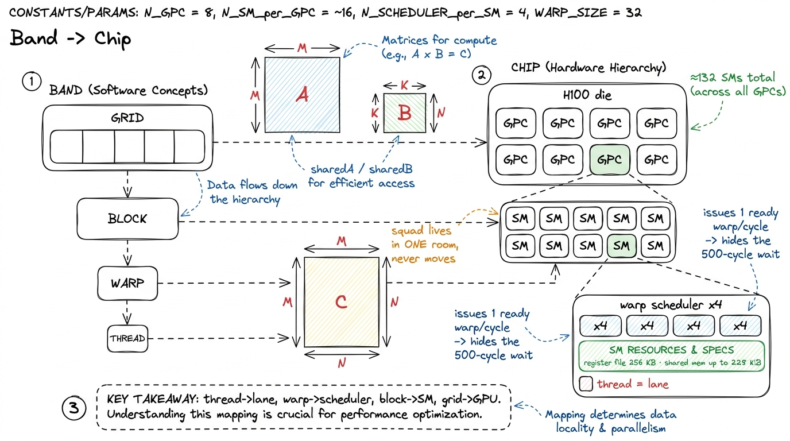
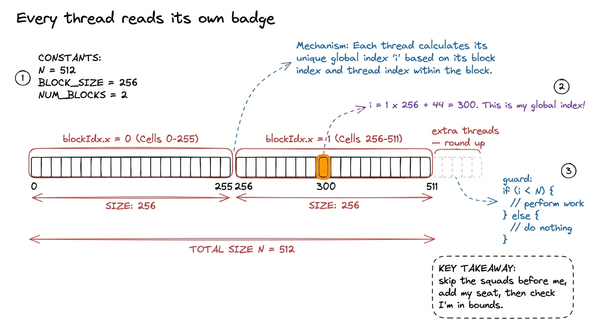
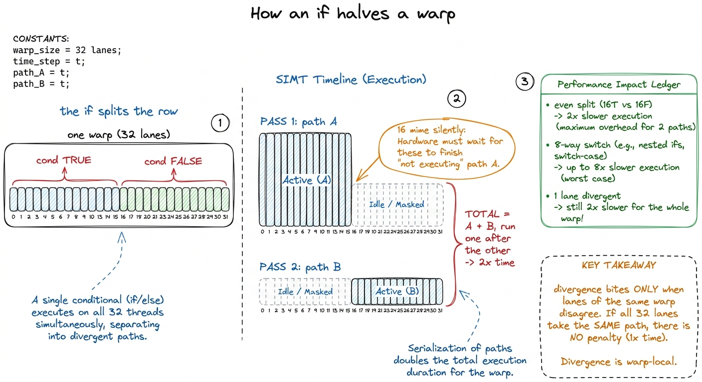
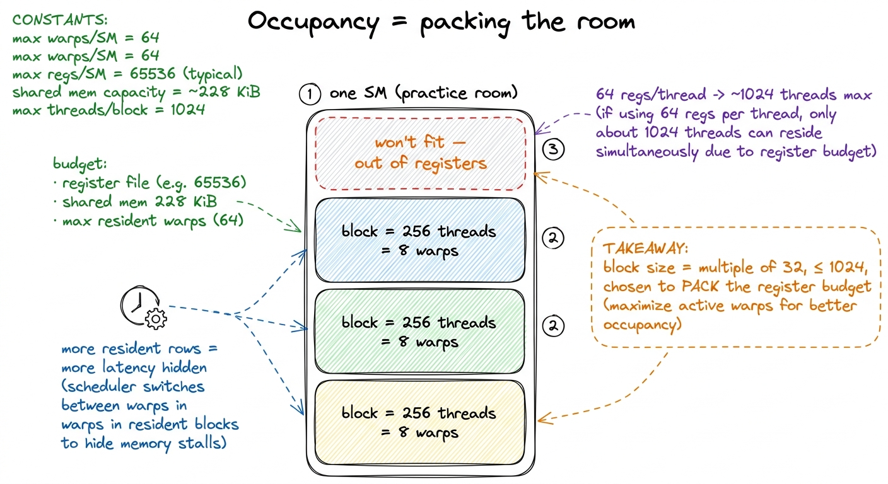

Threads, warps & blocks: the marching band
By the end of this chapter you can stand at a whiteboard and teach the whole GPU execution hierarchy — thread, warp, block, grid — as one clear parade, so that a student who has never written a line of CUDA can tell you exactly who runs where, why the number 32 keeps showing up, and why a single if can cut a kernel's speed in half.
This is the map underneath everything else in the workshop. Every optimization we teach later is really a sentence about one of these four levels. So let's make the levels feel obvious first, using people, not silicon.
The one-sentence answer
When you launch a GPU program, you don't launch one worker. You launch thousands of identical workers at once, and every single one runs the exact same instructions — just on a different slice of the data. The whole art is that the workers are organized into a strict little hierarchy, and each rung of that hierarchy lands on a specific piece of the physical chip.

figure rendering · The core metaphor: one thread is a musician, a warp is a row of 32 marThree names you type, one the hardware forces on you
Here is the twist that makes GPUs confusing at first, and it's worth naming plainly. Of the four levels, you personally choose three of them when you launch the program: how big the grid is, how big each block is, and therefore how many threads exist. But the warp — the row of 32 — you never asked for. The hardware slices every block into rows of exactly 32 whether you like it or not.
That number 32 is not a rough guideline. It is baked into the scheduler, into how registers are laid out, into how memory is read. Almost every performance rule in this whole workshop is downstream of that one constant. So drill it: a warp is exactly 32 threads, always.

figure rendering · The four levels: you size grid, block and thread — the hardware silentA tiny number: a block of 100 wastes a whole row
Now put a small number on the board so the "always 32" rule bites. Suppose a student asks for a block of 100 threads. How many warps is that?
The hardware can only make rows of 32. So 100 threads becomes four rows: 32 + 32 + 32 = 96, and then a fourth row holding the last 4 real musicians padded out with 28 empty uniforms. That fourth row still marches. It still takes up a full row's worth of space and attention. But 28 of its 32 members are doing nothing.

figure rendering · A block of 100 becomes four warps — the last with 4 real threads and 2Where each level actually lives on the chip
Now do the second pass: land each level of the band on the real hardware. This is the mapping to memorize, because every later optimization is a statement about one of these arrows. Use an NVIDIA H100 as the concrete machine.
A thread maps to a lane — one slot in the machine's datapath, with its own tiny stash of private registers (the H100 gives each processor a 256 KB register file, at most 255 registers per thread). One musician, one music stand.
A warp maps to a warp scheduler, and this is the beating heart of why GPUs are fast. Each H100 SM has four warp schedulers. Every cycle, a scheduler looks at all the rows of 32 it's holding, picks one that is ready (not stuck waiting), and issues its next instruction. Here's the magic: when row A is stuck waiting ~500 cycles for data to arrive from far-away memory, the scheduler doesn't sit idle — it issues row B, then C, then D. The waiting never disappears; it gets hidden behind other rows' work.
A block maps to a Streaming Multiprocessor (an SM) — one of the H100's roughly 132 SMs. The squad gets one practice room and stays in it for its entire life; it never moves to another room. That room's scratchpad (shared memory, up to 228 KiB) and its registers are what the squad shares. An SM can hold several squads at once if their combined needs fit in the room.
A grid maps to the whole GPU. A hardware traffic-cop hands squads out to SMs as rooms free up. If there are far more squads than rooms — and there usually are — they drain through in waves.

figure rendering · The mapping to memorize: thread is a lane, warp is a scheduler, block"Who am I?": every musician reads their own badge
Because all the workers run the same code, the very first thing every kernel does is figure out which slice of the problem it owns. It works out its own identity from three numbers the hardware hands it: threadIdx (my position inside my squad), blockIdx (which squad I'm in), and blockDim (how big a squad is).
The one line every CUDA programmer writes is this:
int i = blockIdx.x * blockDim.x + threadIdx.x;Read it in plain English: skip past all the squads in front of me, then add my seat number inside my own squad. If each squad holds 256 people, then squad 0 is people 0–255, squad 1 is people 256–511, and so on. This arithmetic hands every musician a unique global number.
if (i < N) { ... }. Miss it and the extra musicians scribble past the end of your data. The fix is one line; the bug is invisible without it. Teach the guard in the same breath as the index, never separately.
figure rendering · Each thread computes a unique global index from blockIdx, blockDim, thThe one that halves your speed: when a row disagrees
Now the payoff that makes this chapter matter for performance. Remember: the 32 musicians in a warp share one set of sheet music — one program counter. They can only ever be on the same line of music at the same time. So what happens when your code has an if, and half the row should do one thing and half should do another?
The row cannot split into two. There's only one music stand. So the hardware does the only thing it can: it plays both paths, one after the other. First it plays path A with the "true" half of the row active and the "false" half frozen (marking time, discarding their work). Then it plays path B with the halves swapped.
switch with 8 cases that scatters a warp 8 ways can serialize into 8 passes — down toward 1/8 speed. The jaw-dropper: this is why a student's first profiled kernel sits at "40-60% warp efficiency" and they can't figure out why. It's one innocent if.if (blockIdx.x == 0) is usually fine (whole squads agree). But if (threadIdx.x % 2 == 0) is a disaster — it splits every single row right down the middle. The fix students remember: "make the row agree." Branch on threadIdx.x / 32 (the row number), never on something that alternates inside a row.
figure rendering · Both sides of the branch run serially with half the lanes miming — samPicking the squad size: the packing puzzle
One last practical question students always ask: how big should a block be? Two hard rules and one judgment call.
Hard rule one: a block can hold at most 1024 threads. Ask for more and the launch simply fails. So a 2-D squad is at most 32×32.
Hard rule two: make it a multiple of 32, or you pay for empty uniforms (the block-of-100 problem above).
The judgment call is which multiple of 32 — 128? 256? 512? This is the occupancy question, and it's just a packing puzzle. Each SM (practice room) has a fixed budget: a register file, a shared-memory scratchpad, and a cap on how many rows it can hold. More resident rows means more warps for the scheduler to juggle, which means more latency it can hide. But each thread eats registers, so fat threads mean fewer fit in the room.
1 More occupancy is not automatically better. Once the schedulers always have some ready row, extra rows buy nothing — and cramming more threads in can force the compiler to "spill" registers to far-away memory, which is slower. The best kernels on the ladder often run at only 50-60% occupancy with fat, register-hungry threads. Occupancy is a means, not the goal — don't oversell it to students as "higher is better."

figure rendering · Block size is a packing decision: registers and shared memory per threThe default advice — 128 or 256 threads — exists because it packs cleanly into almost any register budget while still handing each scheduler several rows to juggle. That's the safe answer to give students on day one; the tuning comes later.
You can now teach
- The four-level hierarchy as a marching band: thread = one musician, warp = a row of 32 in lockstep, block = a squad sharing a room, grid = the whole band — drawn from the outside in.
- Why you type three levels but the hardware forces the warp of 32 on you, and why block sizes should be multiples of 32 (the block-of-100 wastes an eighth of a warp).
- The hardware mapping to memorize — thread→lane, warp→scheduler, block→SM, grid→GPU — and why the scheduler hiding a ~500-cycle wait behind other warps is the real source of GPU speed.
- The "who am I" index
blockIdx.x * blockDim.x + threadIdx.x, computed by hand, plus the bounds-guard that fixes the invisible off-the-end bug. - Warp divergence: why one
ifthat splits a row runs both paths serially and halves throughput, and the rescue — "make the whole row agree" — that keeps it free. - The occupancy packing puzzle behind choosing a block size, and the safe default of 128 or 256 threads.